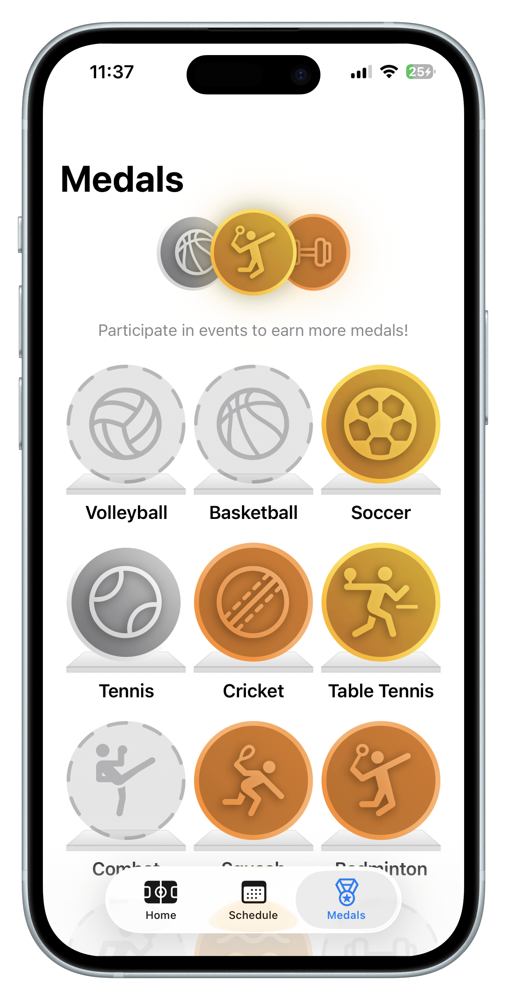
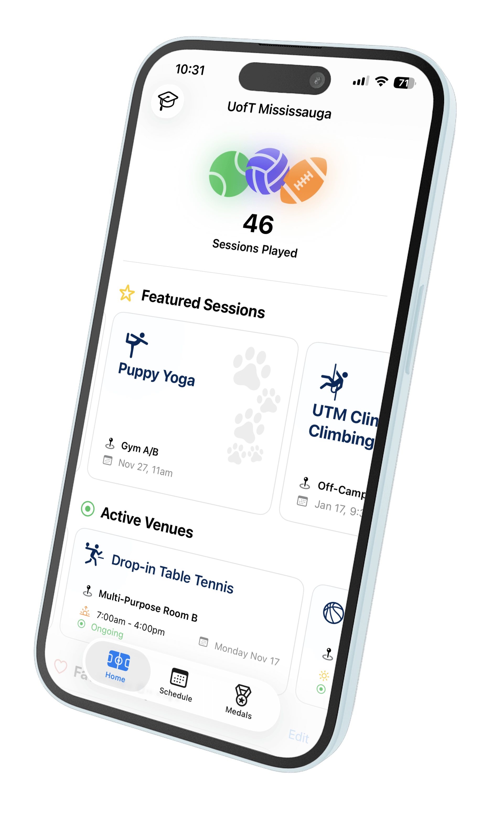
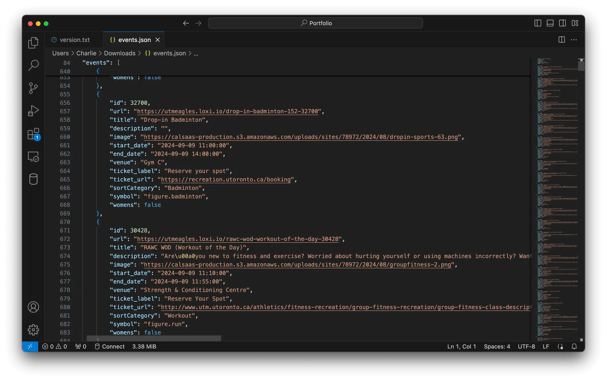
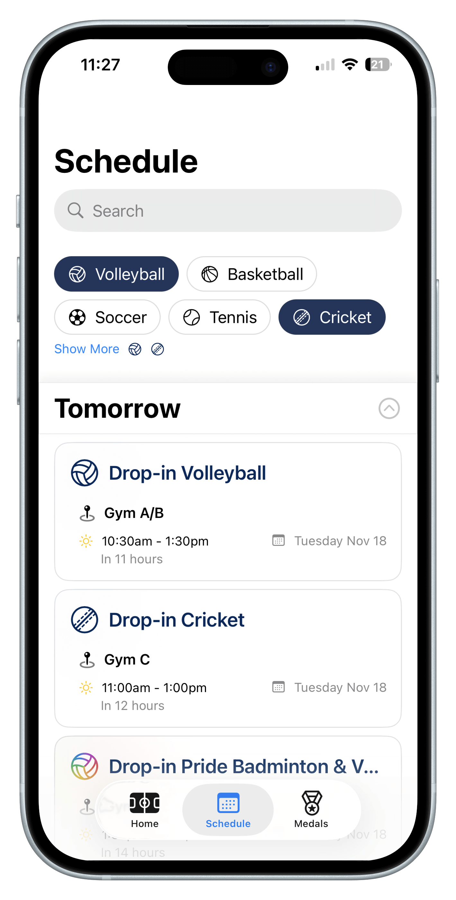
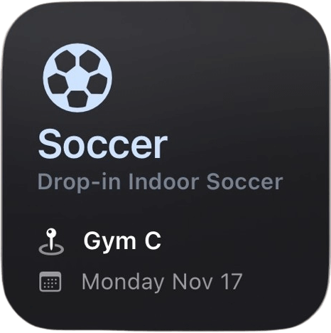
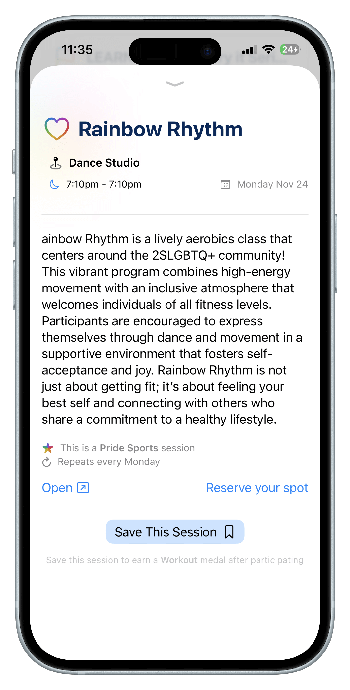
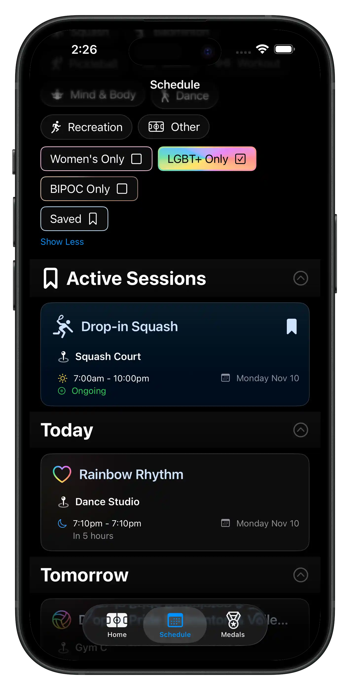

01
What is UniSports?
UniSports lets you explore drop-in sports at 10+ universities across Ontario, and earn medals as you play.
The app is built in SwiftUI and features Siri shortcuts and widgets, notifications, inclusivity filters, and personalized stats. The goal was to aggregate inaccessible sport schedules, and provide them to students in a faster and cleaner format.

02
Aggregating Schedules
Public schedules and announcements are webscraped daily from university websites. They're converted to JSON with metadata for custom SF Symbols and sort categories. The JSON is stored publicly on GitHub, with a version number used for caching.
The UniSports app checks the remote version number, and only updates its local schedule if needed. This is done on launch, and through Background App Refresh in iOS.


03
Design Language and Siri Interactions
Filtering is done with chips, which are wrapped in a custom SwiftUI Layout that fills any screen size horizontally. The schedule scrolls infinitely with pagination using a LazyVStack, and a custom content provider that prevents visual bugs with LazyVStacks in ScrollViews on iOS. Events are pre-indexed in Swift by title, description, and location.
App Intents drive Siri interactions with custom Shortcuts made in SwiftUI. This enables homescreen widgets, and asking Siri for the next session of your favourite sport.


04
BIPOC, LGBT+, and Women's Only Sports
As a member of the LGBT+ community, I know how important it is to have inclusion in sports. UniSports promotes inclusive spaces to celebrate diversity, foster community, and provide safe spaces for students. Users can filter for LGBT+, BIPOC, and Women’s Only sports sessions at their school using UniSports.
These sessions are tagged automatically based on existing categories provided by the universities, as well as keyword matching. Event content and tagging is heavily moderated to ensure correct information, and are constantly updated to match university guidelines and values.
